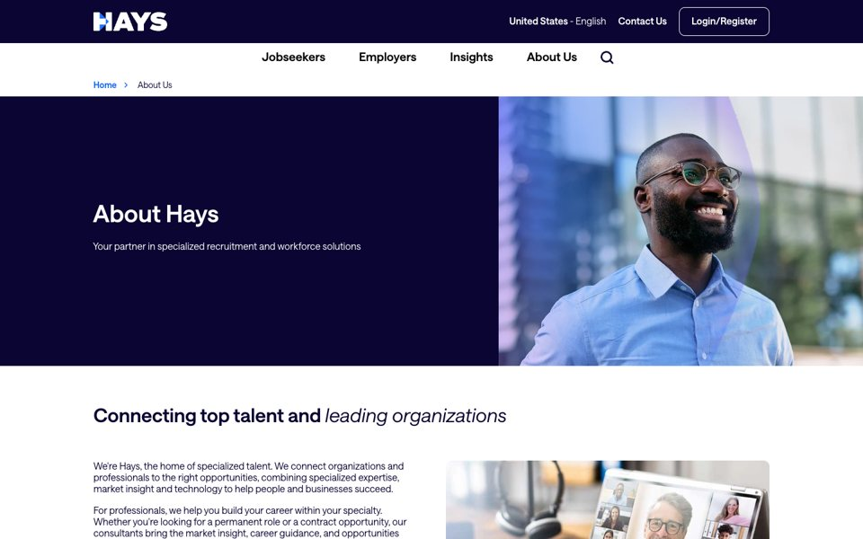
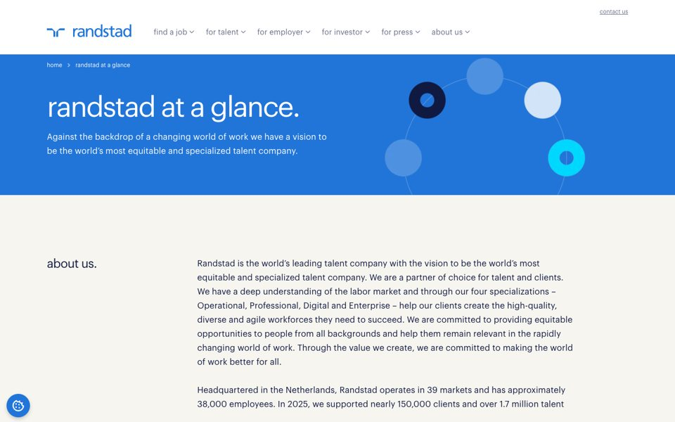
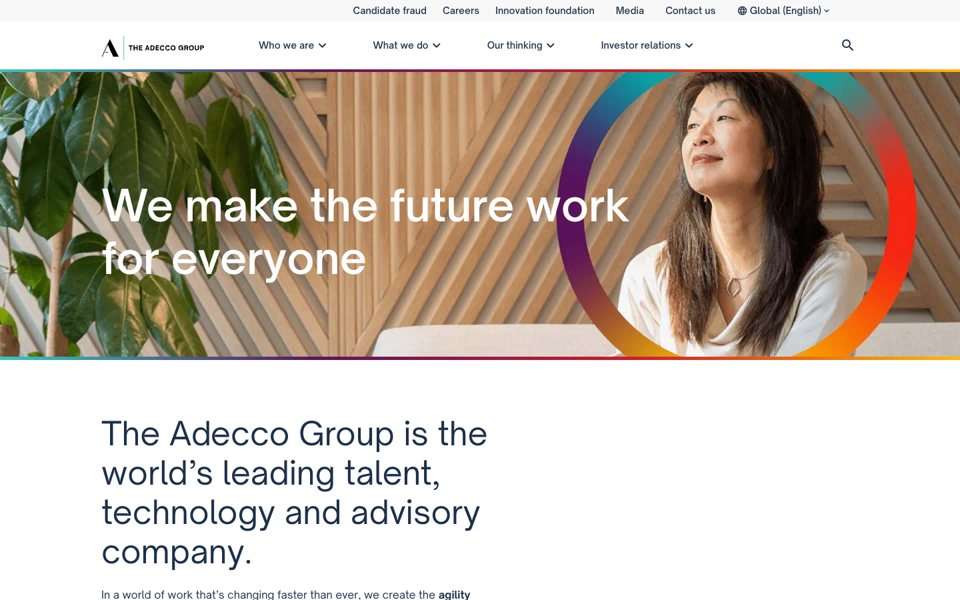
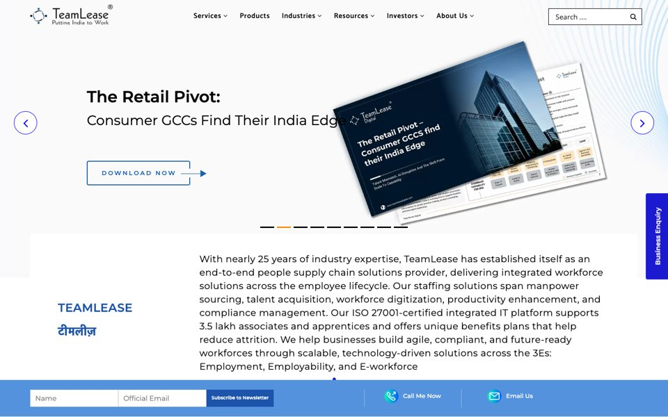
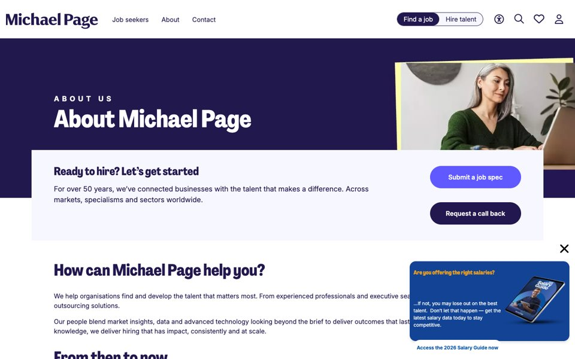
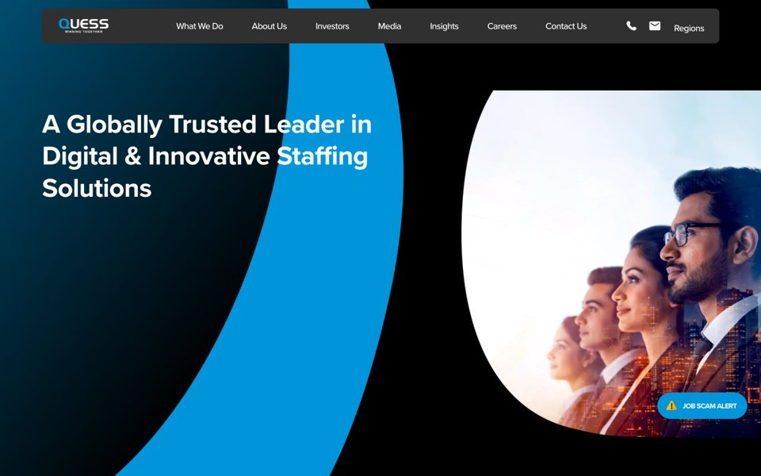
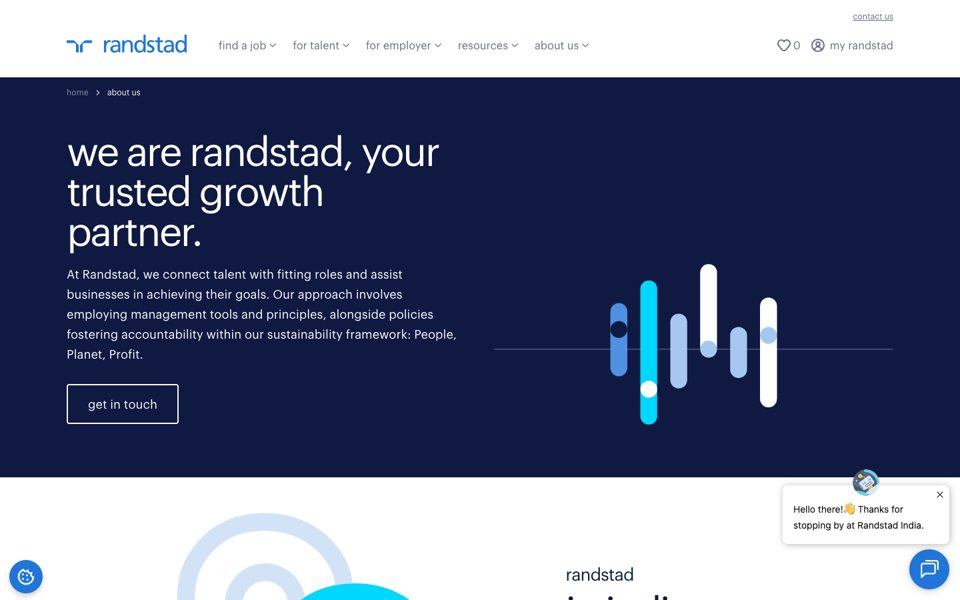
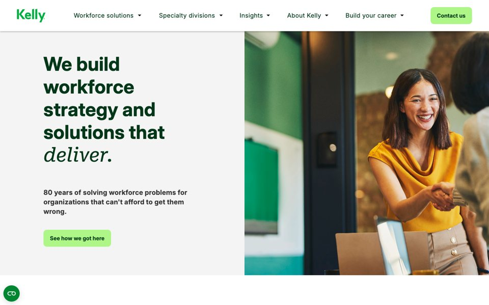
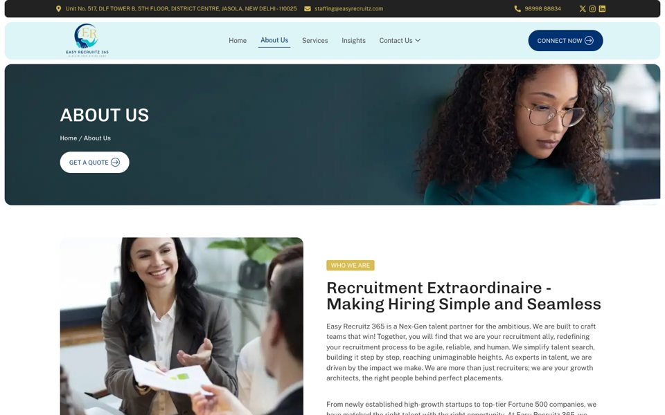
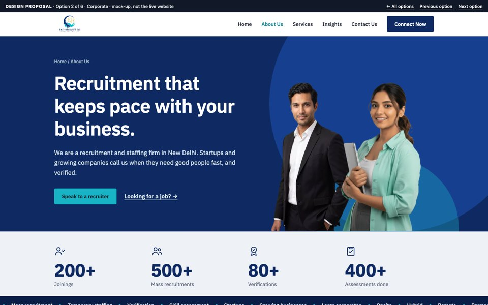

Hays (United Kingdom)
What they do wellShort headings with one emphasised word, real people photography, icon cards and one primary button.
What we appliedPeople in the hero and an icon grid for services (Option 2).
Research and thought process
We did not start with colours. We started with what your page needs to achieve, looked at how much larger staffing companies solve the same problem, and then designed. This page shows that work.
1. Research
We studied the About pages of eight companies that are far larger than any of us, in two rounds. We looked for patterns they share, not for things to copy. Select a screenshot to see the full page.

What they do wellShort headings with one emphasised word, real people photography, icon cards and one primary button.
What we appliedPeople in the hero and an icon grid for services (Option 2).

What they do wellKey figures with icons, rhythmic short headlines and a founder story with a timeline.
What we appliedAn icon above every big number (Options 1 and 2) and the story tone (Option 3).

What they do wellGenerous whitespace, one narrow column of short blocks and plain, direct copy.
What we appliedWhitespace and comfortable reading width (Options 1 and 3).

What they do wellCutout people on colour, service cards with icons, client logos and awards.
What we appliedCutout people with shapes behind them in all three options.

What they do wellA floating “Ready to hire?” card with two actions over the hero, a “Find a job / Hire talent” switch in the header, and three bold action tiles.
What we appliedThe overlapping action card, the audience switch and the colour tiles (Option 1).

What they do wellA dark hero with a big curve, people in an arch shape, a persistent “Job scam alert” chip and services as a clean list.
What we appliedThe arch, the dark theme, the services list and the always-visible scam alert (Option 2).

What they do wellVery large lowercase headlines, abstract illustration instead of photos, and generous whitespace.
What we appliedThe lowercase headlines and the animated illustration (Option 3).

What they do wellHeavy type with one italic serif word, a bold colour block for “How we do it”, and a clear “meet the people accountable” callout.
What we appliedHeavy type with one italic word, and big colour blocks (Option 1).
2. Your current page
Your current page already has a good base: real stats, a clear menu and a motto. These are the things that hold it back, and how each option addresses them.


3. Method
The order below is the order the work was done in.
Reviewed the live page as a visitor sees it, and noted what is missing or confusing.
Studied Hays, Randstad, Adecco, TeamLease, Michael Page, Quess, Randstad India and Kelly, and listed the patterns they share.
Recognised two audiences, employers and job seekers, and wrote down what each needs.
Ordered the sections to answer a visitor's questions one after another.
Built seven different directions from the same content, so you can choose by feel.
Simplified the look, made small text readable, and replaced generic form controls with designed ones.
Reviewed every option at desktop and phone sizes and fixed what looked wrong.
Listed the open points: real photos, confirmed numbers, client logos and how job seekers apply.
4. Product thinking
A staffing firm serves two very different visitors. Your current page speaks mostly to one of them. Every option lets each visitor find their own path quickly.
5. Reasoning
Each choice had alternatives. Select one to see what we weighed.
WhyIt lets you react to a real choice, so the decision is about what fits your brand.
Trade-offMore to look at, and you have to choose.
WhyEmployers are the paying customer, so that action gets the most weight. Job seekers keep a clear secondary link.
Trade-offCandidates get a smaller entry point. An option is two equal entry points under the hero.
WhyKeeps the page short and gives each visitor a focused view. Every step is tagged "You" or "Us" so people see what is expected of them.
Trade-offHidden content is less discoverable, so the hero link opens the right tab, and without JavaScript both journeys are shown.
WhyIt matches the tabs, is quicker to use and shows both choices at once. Buttons on the page pre-select the right one.
Trade-offSlightly more code than a standard dropdown.
WhyIt looks cleaner and more modern than boxed photos, and it is the style used by TeamLease and Hays.
Trade-offIt needs clean photos of single people. Photos of your real team will work best.
WhyThe figures come from your current page. We did not invent client names or testimonials, because fake proof can damage trust.
Trade-offThe page has less social proof until real logos and testimonials are added.
WhyThe first round gave three solid directions. A second round (Michael Page, Quess, Randstad India, Kelly) added three more distinct ones. A separate option uses the exact colours of your logo (#023376, #02bfc9, #e7ca7b), so you can see the page as unmistakably your own brand.
Trade-offMore options means a harder choice. They are ordered newest first, and each explains who it suits.
WhyIndustries, team profiles, a day-by-day hiring timeline, client stories, a “where to start” picker and a safety notice answer questions visitors have before they call. Your tagline and motto are unchanged.
Trade-offThe profiles, stories and timeline are sample content and must be replaced with real, approved content before launch.
WhyAn About page is static content, so it opens with a double-click and needs no build step.
Trade-offIt can be moved to React or your content system later if needed.
Open each design on your laptop and phone, then tell us which one feels like Easy Recruitz.
View the three options